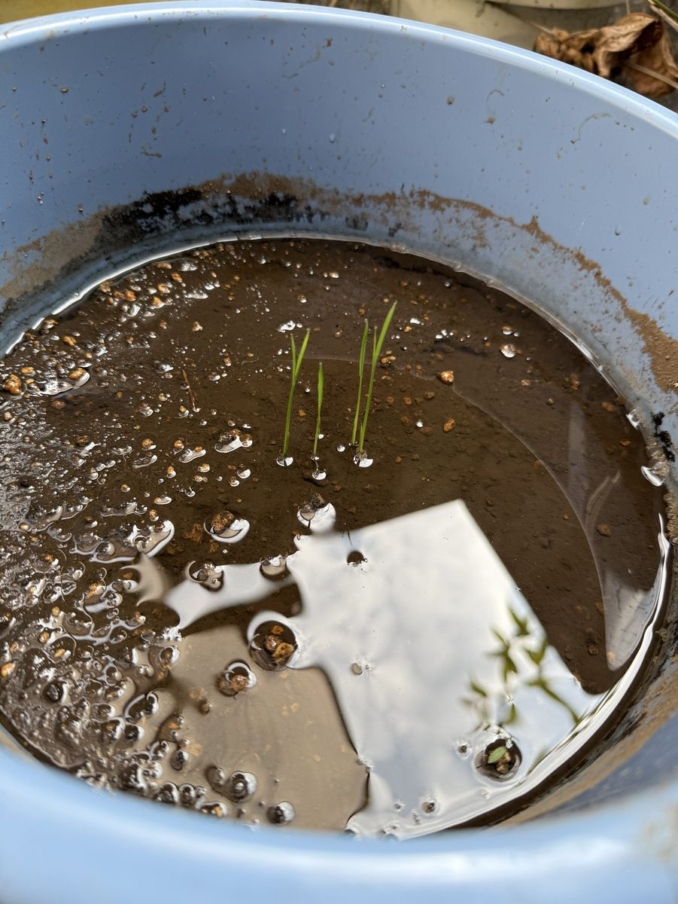
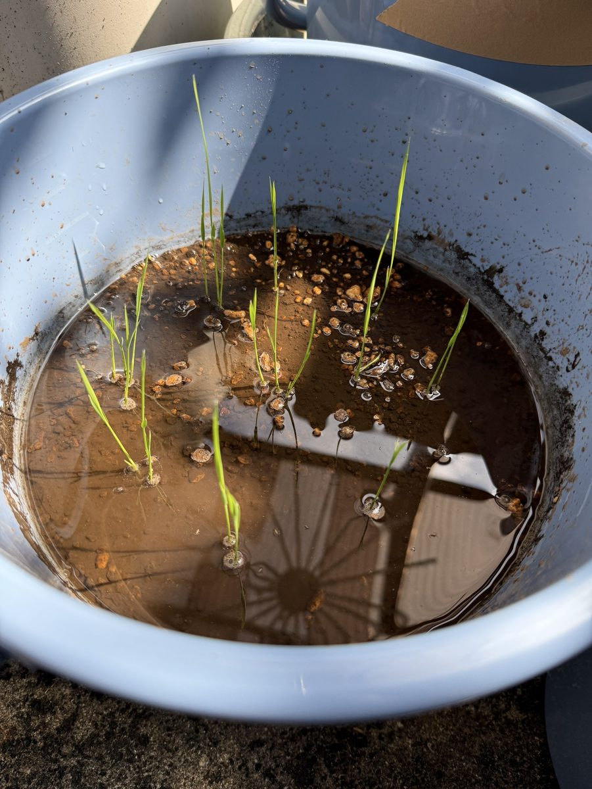
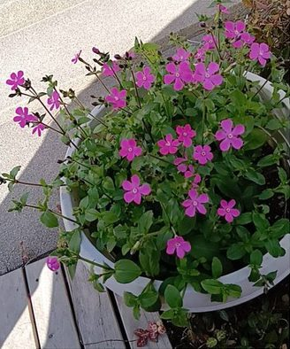
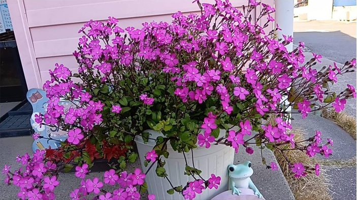

01
バケツ稲


育ちが早い!
バケツ稲を育てた方
植物を育てる水として使った事例をご紹介します。農業・養殖・畜産での活用の詳しい資料は準備中です。
使用者から寄せられた記録です。栽培条件を統一した科学的試験ではありません。


育ちが早い!
バケツ稲を育てた方
同じ土で、水道水と濃縮りふれを使い分けて育てた植物の写真です。


土も同じなのに、茎の太さと花の勢いも違うよ。お花はここ1ヶ月で、ググッとこの成長を遂げました!
鉢植えで試した方
※使用者から寄せられた記録・感想です。植物の種類や状態、育てる環境によって結果は異なります。
準備中です。資料がまとまり次第、このページでご紹介します。